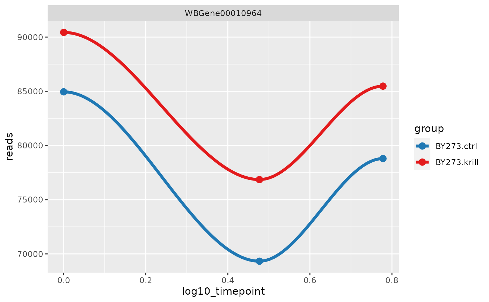
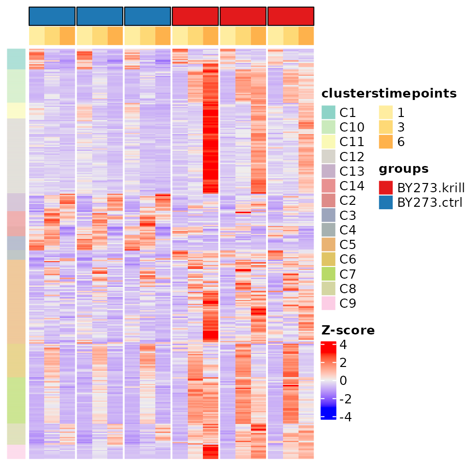
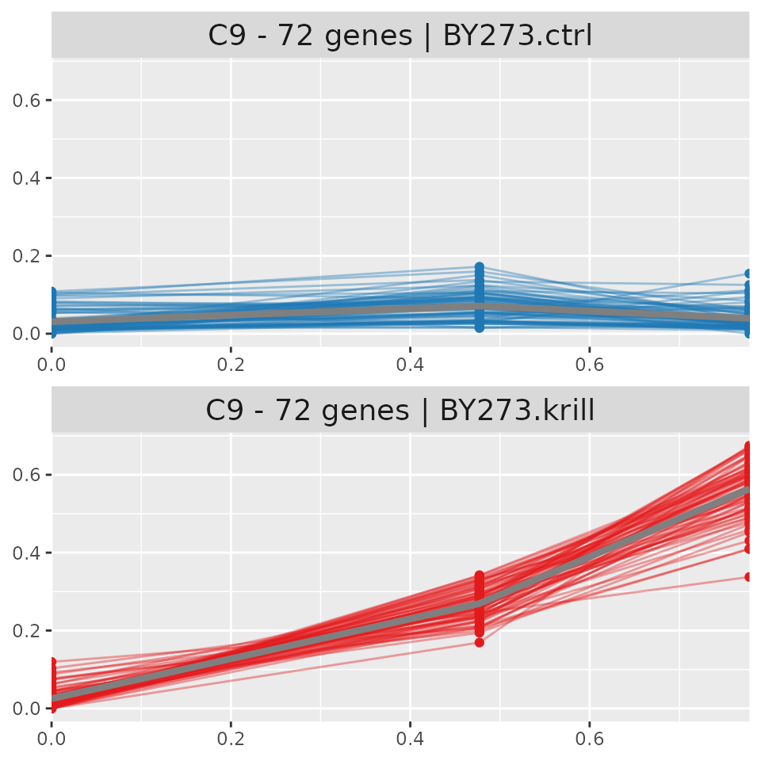

TimeSeries Analysis – C.elegans example run
Yohan Lefol
07. March 2023
Source:vignettes/TS_analysis_celegans.Rmd
TS_analysis_celegans.RmdTimeSeries analysis
Parameter set up
Set the below parameters for the downstream analysis
#Give names to saved object and name of results repository
name_result_folder<-'TS_results_celegans_example/'
obj_name<-'timeSeries_obj_celegans_example.Rdata'
#Set-up time series object parameters
diff_exp_type<-'DESeq2' #package used for DE – can also be 'limma'
p_val_filter_type<-'padj' #Either padj or pvalue, used to filter for significance
p_thresh<-0.05 #pvalue or padj value threshold for significance
l2fc_thresh<-1 #log(2)foldChange threshold for significance
name_control<-'BY273.ctrl' #Name of experiment as seen in the sample file
name_experiment<-'BY273.krill' #Name of control as seen in the sample file
graphic_vector<-c("#e31a1c","#1f78b4") #Pre-set colors for the groups
#Declare organism and load library
org_sem_sim='org.Ce.eg.db'
if(system.file(package=org_sem_sim) ==''){#Package not installed
if (!require("BiocManager", quietly = TRUE))
install.packages("BiocManager")
BiocManager::install(org_sem_sim)
}
library('org.Ce.eg.db')## Loading required package: AnnotationDbi
#Define specimen and ontology parameters
my_ont_gpro='GO:BP'
my_ont_sem_sim='BP'
my_org_gpro='celegans' #Set the species for the gprofiler analysis
# The seed serves to create reproducible results with PART.
# A seed will ensure that the random components of PART clustering will be the same
# as long as the same seed is used. For more information on seeds, please consult
# this link: https://www.r-bloggers.com/2018/07/%F0%9F%8C%B1-setting-a-seed-in-r-when-using-parallel-simulation/
PART_seed=123456
PART_l2fc<-2 #log(2)foldChange threshold for PART clustering
PART_min_clust<-50 #Minimum cluster size for PART
PART_recursion<-100 #Number of recursions, default is 100, using 10 for example
log_tp_traj<-TRUE #Defines if timepoints should be log transformed for illustration purposes
# Allows for all temporal combinations to be done instead
# of just sequential comparison. ex: do TP2vsTP1, TP3vsTP2, AND TP3vsTP1. In a normal instance
# only the first two comparison of the example would be run.
do_all_temporal_comparisons=FALSE
#Used to highlight specific genes regardless of differential gene expression significance
genes_of_interest<-c('WBGene00016343','WBGene00010964','WBGene00001975','WBGene00002178','WBGene00018700','WBGene00010961',
'WBGene00001177','WBGene00006750','WBGene00004804')
#The ancestors that will be queried, the ontology must be specified (BP,MF,or CC)
#Set to an empty vector c() if not required by the analysis
target_ancestors<-c('GO:0002253','GO:0019882','GO:0002404','GO:0002339','GO:0042386',
'GO:0035172','GO:0002252','GO:0006955','GO:0002520','GO:0090713',
'GO:0045321','GO:0001776','GO:0050900','GO:0031294','GO:0002262',
'GO:0002683','GO:0002684','GO:0002440','GO:0002682','GO:0002200',
'GO:0045058','GO:0002507')
ancestor_ontology<-'BP'
#Some extra set-up
name_save_obj<-paste0(name_result_folder,obj_name)#The object will be saved in result folder
#Create main directory for results
# dir.create(name_result_folder)
my_group_names<-c(name_experiment,name_control)
names(graphic_vector)<-c(name_experiment,name_control)Create TimeSeries object
Using the parameter above, generate a TimeSeries_Object and load the example data as well as the semantic similarity data
TS_object <- new('TimeSeries_Object',
group_names=my_group_names,group_colors=graphic_vector,DE_method=diff_exp_type,
DE_p_filter=p_val_filter_type,DE_p_thresh=p_thresh,DE_l2fc_thresh=l2fc_thresh,
PART_l2fc_thresh=PART_l2fc,sem_sim_org=org_sem_sim,Gpro_org=my_org_gpro)
TS_object <- TS_load_example_data(TS_object,'CELEGANS')
TS_object <- add_semantic_similarity_data(TS_object,my_ont_sem_sim,vignette_run=TRUE)Differental gene expression analysis
Loads the necessary functions to perform differential gene expression analysis If the tool used is DESeq2(Love, Huber, and Anders 2014), the data needs to be normalized using it’s method. If the tool used is limma(Smyth 2005), the normalized matrix should have been inputed, and thus no normalization is needed.
This code chunk performs both the conditional and temporal differential gene expression and saves the results within the Time Series object.
#Perform normalization if the DESeq2 tool is being used and if normalized matrix doesn't exist
if (slot(TS_object,'DE_method')=='DESeq2' & 'norm' %in% names(assays(slot(TS_object,'exp_data')))!=TRUE){
TS_object <- normalize_timeSeries_with_deseq2(time_object=TS_object)
}
#Perform conditional differential gene expression analysis
TS_object<-conditional_DE_wrapper(TS_object)
#Perform temporal differential gene expression analysis
TS_object<-temporal_DE_wrapper(TS_object,do_all_combinations=do_all_temporal_comparisons)PART clustering
The code chunk below prepares and initiates PART clustering(Nilsen et al. 2013). It first retrieves the number of significant genes for PART clustering in the ‘signi_genes’ variable This chunk can be quite lengthy depending on the number of genes included for clustering as well as the number of recursions set for the clustering
#Extract genes for PART clustering based on defined log(2)foldChange threshold
signi_genes<-select_genes_with_l2fc(TS_object)
#Use all samples, but implement a custom order. In this case it is reversed
samp_dta<-exp_sample_data(TS_object)
samps_2<-samp_dta$sample[samp_dta$group==TS_object@group_names[2]]
samps_1<-samp_dta$sample[samp_dta$group==TS_object@group_names[1]]
#Create the matrix that will be used for PART clustering
TS_object<-prep_counts_for_PART(object=TS_object,target_genes=signi_genes,
scale=TRUE,target_samples=c(samps_2,samps_1))
#Sets a seed for reproducibility
if (is.null(PART_seed)==FALSE){
set.seed(as.character(PART_seed))
}
TS_object<-compute_PART(TS_object,part_recursion=PART_recursion,part_min_clust=PART_min_clust,
custom_seed=PART_seed,dist_param="euclidean", hclust_param="average",
vignette_run=TRUE)Gprofiler analysis
The code chunk below runs a gprofiler analysis(Kolberg et al. 2020; Raudvere et al. 2019). IMPORTANT: This function requires that there be a stable internet connection lack of connection or intermittent drops in the connection will result in an error and the termination (stop) of the code chunk
If an error has occured, this code chunk can be re-run separately from the above chunks by uncommenting (removing the ‘#’ in front) the “load(‘timeseries_obj_res.Rdata’)” line.
This will load the results saved after the PART clustering code chunk
This code chunk will overwrite the saved object if it is completed. The overwritten object will then contain the gprofiler analysis results and can be used to generate plots with the downstream code chunks.
TS_object<-run_gprofiler_PART_clusters(TS_object,vignette_run = TRUE) #Run the gprofiler analysisTimeSeries analysis results
Most plots are created in SVG format for ease of editing with SVG editing software such as InkScape (open source software). Some plots are created in html format as they are interactive plots. These require a web browser to open them
To convert SVG files to PNG/JPG/PDF, this website is available: https://svgtopng.com/ HTML files can be opened and then saved as PNG (or other) using the camera icon in the top right of each respective interactive plot
TimeSeries summary of experiment
Name of groups beings compared: BY273.krill vs BY273.ctrl Number of genes analyzed: 46778
Differential expression parameters used: Method: DESeq2 P statistic filter used: padj with a 0.05 threshold Log(2)FoldChange significance threshold used: 1
PART parameters used: PART log(2)FoldChange significance threshold: 2 number of recursions: 100 minimum cluster size: 50 distance parameter: euclidean hclust parameter: average custom seed used: 123456 PART computation time: 26462.811 sec elapsed
PCA of sample data:

Differential Gene Expression results
DEGs found per analysis:
| experiment.name | number.of.DEGs |
|---|---|
| BY273.krill_vs_BY273.ctrl_TP_1 (conditional) | 586 |
| BY273.krill_vs_BY273.ctrl_TP_3 (conditional) | 1018 |
| BY273.krill_vs_BY273.ctrl_TP_6 (conditional) | 1986 |
| TP_3_vs_TP_1 (temporal) | 2329 |
| TP_6_vs_TP_3 (temporal) | 1302 |
| total unique genes | 4388 |
Each experiment listed in the above table has separate results which can be viewed in the ‘TS_results’ folder. In the main results folder, the differential gene expression results are located in the ‘DE_results_conditional’ and ‘DE_results_temporal’ plot. Each individual experiment creates the following: DE_raw_data.csv: A csv file containing all the genes and their associated differential expression results, regardless of significance. DE_sig_data: A csv file containing only the significant differential expression results. MA_plot.png: A MA plot, these are often used to evaluate the quality of the normalization. volcano_plot.png: A volcano plot which splits significantly up-regulated and down-regulated genes as well as non-significant genes. PCA_plot: A PCA plot using only the samples implicated in the differential gene expression analysis.
The pipeline also creates two large heatmaps which summarize conditional and temporal differential expression results. The heatmaps were created using the ComplexHeatmaps package(Gu, Eils, and Schlesner 2016). These heatmaps illustrate each experiment as different columns (distinguished by color) while the rows distinguish the groups. Plotted in the heatmaps is the log transformed counts, while the log transformed log(2)fold change is seen in a histogram at the bottom of the heatmap. The number of genes in each experiment (colored columns) is indicated in the legend at the bottom of the heatmap. In the case of the temporal heatmap, the rows are labelled ‘experiment’ and ‘control’. The ‘experiment’ represents the time points being compared while the control represents the timepoint which the ‘experiment’ is compared against. For example, TP2_vs_TP1 would have the ‘experiment’ be TP2 and the control be TP1, while TP3_vs_TP2 would have TP3 as the ‘experiment’ and TP2 as the ‘control’. Note that TP=time point.
The conditional heatmap
 The temporal heatmap
The temporal heatmap
 ## Genes of interest results
## Genes of interest results
 If genes of interest have been specified, the pipeline will extract the differential gene expression results, both conditional and temporal, for each gene requested, provided that they are found in the count matrix. These data files, along with individual trajectory plots are stored in the ‘TS_results/genes_of_interest’ folder. Below the trajectory of the most variable gene is shown. If no genes of interest were submitted, a random gene is taken from the differential expression results. Illustrated in the trajectory plots is the timepoints on the x axis and the number of reads (RNAseq) or expression (microarray) on the y axis. Note that data files and trajectory plots are created for all genes of interest found, regardless of their significance based on the differential gene expression analyses.
Cluster results
The code chunk below create the trajectory plots for the clusters found by PART Trajectories are first calculated by calculating the mean of each gene for each time point using the available replicates. The mean value of each gene is calculated once for each group (control/experiment). Afterwards, the genes are scaled in order to be able to represent them on the same axis of values. Each gene is plotted as an individual colored line’, a mean line (gray color) is also plotted to show the overall trajectory of the cluster. These plots were inspired by (Nguyen 2021)
The log_tp_traj parameter defines if the time points should be log transformed. A log transformation of the time points is useful if the time points are not evenly sampled through time. For example, two time points at 0 and 15 minutes, with another time point at 24 hours (1440 minutes) will result in the first two time points being very compressed and possibly indistinguishable from each other.
# dir.create(paste0(name_result_folder,'PART_results')) #create the directory to store results
PART_heat<-PART_heat_map(TS_object,NULL) #Create a summary heatmap, returns plot if save location is NULL
ts_data<-calculate_cluster_traj_data(TS_object,scale_feat=TRUE) #Calculate scaled gene values for genes of clusters
mean_ts_data<-calculate_mean_cluster_traj(ts_data) #Calculate the mean scaled values for each cluster
#Function which determines the number of SVG files to plot all cluster trajectories
#Function commented out for vignettes
# wrapper_cluster_trajectory(TS_object,ts_data,mean_ts_data,log_TP=log_tp_traj,plot_name=paste0(name_result_folder,'/PART_results/Ctraj'))
#find the most variable cluster, subset necessary data and plot it on a single column
#The function will also filter for a cluster which has gprofiler results
target_clust<-find_most_variable_cluster(TS_object,mean_ts_data)
sub_ts<-ts_data[ts_data$cluster==target_clust,]
sub_mean<-mean_ts_data[mean_ts_data$cluster==target_clust,]
plt_clust<-plot_cluster_traj(object = TS_object,ts_data = sub_ts,ts_mean_data = sub_mean, num_col=1,rem_legend_axis=TRUE,log_TP=log_tp_traj)
cluster_map_sum<-t(as.data.frame(table(slot(TS_object,'PART_results')$cluster_map[,c(1)])))
row.names(cluster_map_sum)=c('Cluster name','Number of genes')
colnames(cluster_map_sum)=NULLPART result summary:
| Cluster name | C1 | C10 | C11 | C12 | C13 | C14 | C2 | C3 | C4 | C5 | C6 | C7 | C8 | C9 |
| Number of genes | 105 | 170 | 80 | 381 | 91 | 78 | 50 | 70 | 50 | 427 | 172 | 235 | 108 | 72 |
All cluster results are found in the ‘PART_results’ folder, within this folder you will find the following:
PART_heat.svg: A svg heatmap of the PART result – detailed below. PART_heat_with_names.svg: The same plot as above but with sample and gene names included. These may not be visible depending on the number of genes included as well as the length of the sample names. PART_heat_cmap.csv: A csv file representing a ‘cluster_map’ which provides the cluster in which each gene was sorted in as well as the color (in HEX code) given to that cluster. PART_heat_data.csv: The z-score values used in the ‘PART_heat’ heatmaps. Ctraj.svg: At least one, and possibly several of these files will be in the folder. This/these SVG plots show the trajectory of each cluster individually while being split by group. Meaning the trajectory of each cluster is shown twice, once per group. Information concerning the cluster and group is shown in the title of each subplot. One example of cluster trajectory is shown below.
PART heatmap and cluster trajectory In this heatmap we illustrate all the genes which were submitted for PART clustering. Each gene is illustrated using a Z-score, which measures the number of standard deviations that a gene has from it’s mean. In essence it measures the variability. Clusters are shown as the colored bar on the left hand side of the plot while groups and timepoints are shown as the colored bars on the top of the heatmap. PART heatmaps were created with ComplexHeatmaps(Gu, Eils, and Schlesner 2016). The cluster trajectory of the most variable cluster (C9) is illustrated, with the trajectory of the experiment group at the top and the control group at the bottom. The x axis represents timepoints and the y axis represents the scaled mean expression of the genes. The expression of each gene is obtained by calculating the mean between all replicates for each time point in each group. The values are then scaled in order to illustrate their trajectory. The overall mean of the cluster is shown as a thicker gray line.

Gprofiler results – standard
The below chunk creates the gprofiler result. Some parameters relating to the species and ontology need to be defined the Multi-Dimensional Scaling (MDS) plots that will be generated by the last function of this code chunk. Both versions of the MDS plots seen below were inspired by (Brionne, Juanchich, and Hennequet-Antier 2019).
The ontology needs to be defined for the MDS plots as well. Note that MDS plots utilise the semantic similarity metric which currently only supports GO ontology (MF – MolecularFunctions, CC – Cellular Components, and BP – Biological processes). These have been defined at the start. The first function plots the standard gprofiler plots (gost plots) to the directory, and it retrieves the information of the requested ontology into the GO_clusters dataframe. This dataframe is then used with the semantic distance to create two versions of the MDS plot.
#Create standard gprofiler results
gpro_res<-gprofiler_cluster_analysis(TS_object,my_ont_gpro,save_path = NULL,return_specific_cluster=target_clust)
GO_clusters<-gpro_res[['GO_df']]
sem_dta<-slot(TS_object,'sem_list')
found_clusters<-find_clusters_from_termdist(GO_clusters,sem_dta)
#Plot and save MDS and clustered MDS
MDS_plots<-wrapper_MDS_and_MDS_clusters(GO_clusters,sem_dta,my_ont_sem_sim,target_dir=NULL,return_plot=TRUE)Each cluster has it’s own individual gprofiler plot, these are found in ‘TS_results/gprofiler_results/figures’. The gost plot for the most variable cluster (C9) is shown below. These interactive plots show the results of various databases when queried with a list of genes. More information concerning these plots and their various datasources can be found at the following link: https://biit.cs.ut.ee/gprofiler/gost
In addition to the standard gprofiler plot, the TimeSeries pipeline creates Multi-Dimensional Scaling (MDS) plots. These plots illustrate a custom selected ontology defined by the ‘my_ont_gpro’ parameter. The first MDS plots shows all the found terms of the specified ontology and distinguishes them based on the cluster(s) in which they are found. In a MDS plot, the distance between each dot represents the semantic similarity between terms(Yu et al. 2010; Wang et al. 2007). This can be loosely defined as the ‘closeness’ between terms. Semantic similarity takes into account many factors, such as the content of the terms (genes which belong to it), it’s associations to other terms, the similarity or lack there-of in function etc… In an MDS plot, the dimensions will be adjusted to fill the space with all the terms, therefor there is no set metric to measure the similarity. The purpose of the MDS plot is moreso to help visualize different groupings (or clusters) of relevant terms. Hovering the cursor over the dots will provide specific information for that dot (term)
A second version of the MDS plot provides a nearest ancestor clustering approach. All terms found are brought up to their nearest common ancestor. Since these databases, GO ontology in particular, have a tree-like hierarchy, we are able to find common ancestors for each term which may provide a broader view if too many individual terms exist. This approach does not distinguish based on clusters in which terms were found, meaning that terms from different clusters may be paired together. The size of each dot in this approach is relative to the number of terms sorted in that common ancestor (dot) while the color is representative of the dominant cluster in that common ancestor. For example, if an ancestor has 4 terms within it, and 3 of those terms are found in cluster 1 (C1), the dot will carry the color associated to C1. Hovering the cursor over the dots will provide more information on those specific common ancestors.
Gprofiler results – custom
Dotplots were designed to illustrate the top n term results for any single ontology. In the below code chunk three different ontologies are demonstrated, GO:BP (biological processes), REAC (REACTOME) (Jassal et al. 2020) and KEGG(Kanehisa et al. 2017). The ‘target_top’ parameter defines the number of terms (from most significant to least) per cluster that will be shown on the dotplot.
All terms shown are considered to be significant, the ‘top’ aspect reflects significance based on the adjusted p value. The adjusted p value is negatively log transformed in order to offer a better visualization, with most significant being in red and less significant (but still statistically significant) in blue.
target_top=10
select_ontology<-'GO:BP'
gpro_BP_dotplot<-GO_dotplot_wrapper(TS_object,file_loc=NULL,target_ontology=select_ontology,top_n=target_top,return_plot = TRUE)Illustrated below is the dotplot for the Biological Process results

Ancestor query plots
Ancestor query plots were designed to query results relating to specific GOs.
This plot searches for children of the queried term IDs. Pathways, such as GO pathways are hierarchically organized, so a single ID will be associated to other IDs. For example, the ‘immune system process (GO:0002376)’ contains several ‘children’, each of these children is likely to have children of their own and so on. If we use the ID for ‘immune system process’ this plot will find all children grand-children great-grand children etc… of ‘immune system process’. It will then split the children based on the PART cluster in which they were found, these results are illustrated in dotplot format. This is accomplished via the GO.db package(Carlson 2021)
Several websites exist to search for GO ancestors of interest, ‘AMIGO2’ is one and ‘quickGO’ is another.
A word of caution with this type of plot. It will always link terms to the most upstream ancestor, so if the query contains two term IDs which are related to each other, the plot will illustrate all results as belonging to the term ID which is the most upstream (oldest/ancestor). Each ancestor queried for will be illustrated in different colors on the dotplot.
#Dotplot for terms relating to specific ancestors
#Check if analysis is required, if not, set to null or empty
if(length(target_ancestors)==0){
ancestor_plots<-list()
ancestor_plots[['MDS']]<-NULL
GOs_ancestors_clust<-data.frame(NULL)
}else{
GOs_ancestors_clust<-find_relation_to_ancestors(target_ancestors,GO_clusters,ontology = ancestor_ontology)
ancestor_plots<-wrapper_ancestor_curation_plots(GOs_ancestors_clust,sem_dta,return_plot=TRUE,target_dir=NULL)
}Two formats are generated for the ancestor plot. The first is a MDS plot. The second is a dotplot version. If more than one term was found to be associated to ancestors, the MDS plot will be created and can be seen below, otherwise only the dotplot will be created. The dotplot will not be created if no terms were found. The files for both of these plots can be found in ‘TS_results/ancestor_plots’. In the MDS and dotplot alike, the color of each term represents the ancestor to which they have been associated and the size is proportional to the -log transformed adjusted p-value. In the MDS plot, the PART clusters in which these terms are found can be seen by hovering over each dot, in the dotplot version, this information is made available on the x axis while the y axis represents the terms.
A interactive table is also generated in order to better navigate the results in the event of a large number of terms found for many different ancestors. The csv version of this data can be found in ‘TS_results/ancestor_plots’.
GO:0006955
Ancestor name: immune response
| term ID | term name | PART cluster |
|---|---|---|
| GO:0006955 | immune response | C13 |
| GO:0006955 | immune response | C5 |
| GO:0006955 | immune response | C8 |
| GO:0045087 | innate immune response | C13 |
| GO:0045087 | innate immune response | C5 |
| GO:0045087 | innate immune response | C8 |
## R version 4.2.2 Patched (2022-11-10 r83330)
## Platform: x86_64-pc-linux-gnu (64-bit)
## Running under: Pop!_OS 22.04 LTS
##
## Matrix products: default
## BLAS: /usr/lib/x86_64-linux-gnu/blas/libblas.so.3.10.0
## LAPACK: /usr/lib/x86_64-linux-gnu/lapack/liblapack.so.3.10.0
##
## locale:
## [1] LC_CTYPE=en_US.UTF-8 LC_NUMERIC=C
## [3] LC_TIME=en_US.UTF-8 LC_COLLATE=en_US.UTF-8
## [5] LC_MONETARY=en_US.UTF-8 LC_MESSAGES=en_US.UTF-8
## [7] LC_PAPER=en_US.UTF-8 LC_NAME=C
## [9] LC_ADDRESS=C LC_TELEPHONE=C
## [11] LC_MEASUREMENT=en_US.UTF-8 LC_IDENTIFICATION=C
##
## attached base packages:
## [1] stats4 stats graphics grDevices utils datasets methods
## [8] base
##
## other attached packages:
## [1] org.Ce.eg.db_3.16.0 AnnotationDbi_1.60.0
## [3] ggplot2_3.4.1 TimeSeriesAnalysis_0.99.0
## [5] BiocFileCache_2.6.1 dbplyr_2.3.1
## [7] SummarizedExperiment_1.28.0 Biobase_2.58.0
## [9] GenomicRanges_1.50.2 GenomeInfoDb_1.34.9
## [11] IRanges_2.32.0 S4Vectors_0.36.2
## [13] BiocGenerics_0.44.0 MatrixGenerics_1.10.0
## [15] matrixStats_0.63.0 knitr_1.42
##
## loaded via a namespace (and not attached):
## [1] colorspace_2.1-0 rjson_0.2.21 ellipsis_0.3.2
## [4] dynamicTreeCut_1.63-1 rprojroot_2.0.3 circlize_0.4.15
## [7] XVector_0.38.0 GlobalOptions_0.1.2 fs_1.6.1
## [10] clue_0.3-64 rstudioapi_0.14 farver_2.1.1
## [13] ggrepel_0.9.3 bit64_4.0.5 fansi_1.0.4
## [16] splines_4.2.2 codetools_0.2-19 doParallel_1.0.17
## [19] cachem_1.0.7 GOSemSim_2.24.0 geneplotter_1.76.0
## [22] jsonlite_1.8.4 annotate_1.76.0 cluster_2.1.4
## [25] GO.db_3.16.0 png_0.1-8 shiny_1.7.4
## [28] BiocManager_1.30.20 compiler_4.2.2 httr_1.4.5
## [31] tictoc_1.1 Matrix_1.5-1 fastmap_1.1.1
## [34] lazyeval_0.2.2 limma_3.54.2 cli_3.6.0
## [37] later_1.3.0 org.Mm.eg.db_3.16.0 htmltools_0.5.4
## [40] tools_4.2.2 gtable_0.3.1 glue_1.6.2
## [43] GenomeInfoDbData_1.2.9 reshape2_1.4.4 dplyr_1.1.0
## [46] rappdirs_0.3.3 Rcpp_1.0.10 jquerylib_0.1.4
## [49] pkgdown_2.0.7 vctrs_0.5.2 Biostrings_2.66.0
## [52] nlme_3.1-162 crosstalk_1.2.0 iterators_1.0.14
## [55] xfun_0.37 stringr_1.5.0 mime_0.12
## [58] lifecycle_1.0.3 XML_3.99-0.13 org.Hs.eg.db_3.16.0
## [61] zlibbioc_1.44.0 scales_1.2.1 promises_1.2.0.1
## [64] ragg_1.2.5 parallel_4.2.2 gprofiler2_0.2.1
## [67] RColorBrewer_1.1-3 ComplexHeatmap_2.14.0 yaml_2.3.7
## [70] curl_5.0.0 memoise_2.0.1 sass_0.4.5
## [73] stringi_1.7.12 RSQLite_2.3.0 highr_0.10
## [76] desc_1.4.2 foreach_1.5.2 filelock_1.0.2
## [79] BiocParallel_1.32.5 shape_1.4.6 rlang_1.0.6
## [82] pkgconfig_2.0.3 systemfonts_1.0.4 bitops_1.0-7
## [85] evaluate_0.20 lattice_0.20-45 purrr_1.0.1
## [88] htmlwidgets_1.6.1 labeling_0.4.2 bit_4.0.5
## [91] tidyselect_1.2.0 plyr_1.8.8 magrittr_2.0.3
## [94] DESeq2_1.38.3 R6_2.5.1 generics_0.1.3
## [97] DelayedArray_0.24.0 DBI_1.1.3 mgcv_1.8-41
## [100] pillar_1.8.1 withr_2.5.0 KEGGREST_1.38.0
## [103] RCurl_1.98-1.10 tibble_3.1.8 crayon_1.5.2
## [106] utf8_1.2.3 plotly_4.10.1 rmarkdown_2.20
## [109] GetoptLong_1.0.5 locfit_1.5-9.7 grid_4.2.2
## [112] data.table_1.14.8 blob_1.2.3 digest_0.6.31
## [115] xtable_1.8-4 httpuv_1.6.9 tidyr_1.3.0
## [118] textshaping_0.3.6 munsell_0.5.0 viridisLite_0.4.1
## [121] bslib_0.4.2